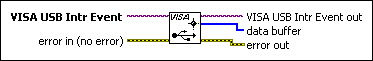
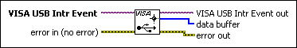

VISA Get USB Interrupt Data VI
Owning Palette: VISA USB VI and Functions
Requires: Base Development System
Retrieves the interrupt data that is stored in a VISA USB interrupt event.

 Add to the block diagram Add to the block diagram |
 Find on the palette Find on the palette |
Owning Palette: VISA USB VI and Functions
Requires: Base Development System
Retrieves the interrupt data that is stored in a VISA USB interrupt event.

| Add to the block diagram |
Find on the palette |
 |
VISA USB Intr Event is a unique logical identifier to a VISA USB Interrupt Event. |
 |
error in describes error conditions that occur before this node runs. This input provides standard error in functionality. |
 |
VISA USB Intr Event out is a copy of the VISA USB Intr Event that is passed out of the VISA functions. |
 |
data buffer is the buffer of USB interrupt data. |
 |
error out contains error information. This output provides standard error out functionality. |